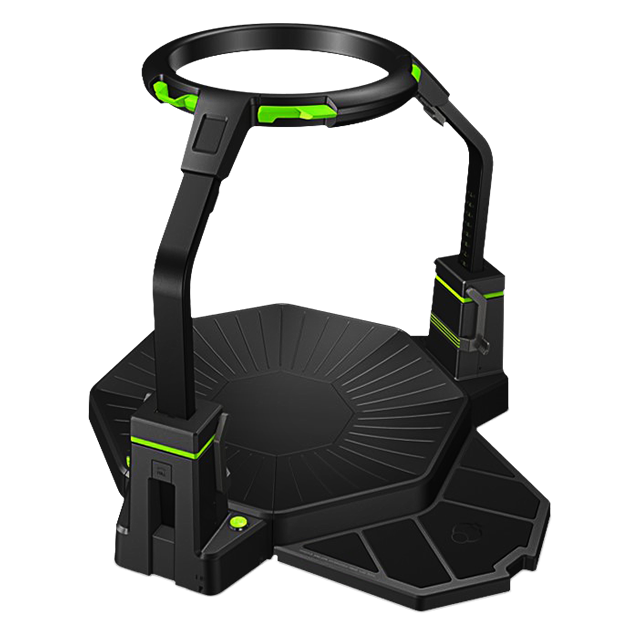

Hoe kan AR voor persoonlijk gebruik worden toegepast?
AR is in steeds meer vormen beschikbaar op de markt en we gaan nu vertellen over hoe de huidige AR systemen worden toegepast voor persoonlijk gebruik. Daarin vertellen we over nieuwe plannen van verschillende instanties om verschillende aspecten in het leven gemakkelijker, mooier of intenser te maken.Gamers
De Oculus Rift is een AR-bril met een breed stereoscopisch gezichtsveld ontwikkeld voor gamers. De Rift was gemaakt om nieuwe dimensies toe te voegen aan gamen, dit om te zorgen dat de gebruiker zich meer kan inleven in een spel. Maar dit is niet het enige voorbeeld wat AR ons te bieden heeft . Wat dacht je van Project Morpheus, een AR bril van Sony die gemaakt is als accessoire voor de Playstation 4? Het overspoelt je met spectaculaire specificaties zoals 120 FPS, waarmee het zelfs het aantal frames van een bioscoop (72 FPS) overschrijdt! Ook heeft het een beeldkwaliteit van1080P. dit betekent dat je 1920x1080 pixels op je beeld hebt, zoals ook in high definition TV’s gebruikelijk is. Mooier zal je het niet snel zien. Het gamen en de belevenis werken nog wel met een controller als man-machine interface, dus je zult nog steeds bij deze bril niet het ultieme virtuele belevingsgevoel hebben. Dan zou je wellicht verwachten dat we hier momenteel stoppen qua belevingsmogelijkheden en denken dat we moeten wachten tot in de toekomst om betere creaties te hebben. Maar de toekomst blijkt dichterbij dan je denkt.
Rechts is een afbeelding van de Virtuix Omni gegeven. Dit nieuwe generatie AR systeem is niet extreem duur, het is al beschikbaar voor $699,- (exclusief een Oculus Rift). Het is een levensgroot platform van 360 graden waarmee je kunt bewegen, springen, zitten en nog veel meer en dat in een virtuele wereld. Het wordt samen met speciale schoenen en trackers geleverd en kan je bijvoorbeeld uren laten rondlopen op de wastelands van het spel Fallout. Het laat je de intense actie van shooters als Call of Duty en Battlefield voelen en nog veel meer. Alhoewel een goede conditie daarbij wel een vereiste is.
Voor de gamers is er tot nu toe al veel te beleven, er zijn meerdere games al speciaal ontwikkeld voor AR en ook de al bestaande bekendere spellen zijn aangepast om met dit nieuwe platform te spelen. Er zijn ook veel open wereld spellen van bekende films zoals The Lord of the Rings in AR te verkennen. Open wereld spellen zijn spellen zonder een lineaire verhaallijn waar de speler de keuze heeft om te gaan en staan waar hij wil waarbij de uitkomst van het verhaal afhankelijk is van de keuzes die de speler gaandeweg maakt.
Overige gebruikers
Wij snappen ook wel dat niet iedereen van games houdt, andere mensen hebben zich op de ontwikkeling van alternatieve toepassingen geworpen en de resultaten zijn soms spectaculair. Hier volgt een paar voorbeelden wat Augmented Reality allemaal kan doen.
Musea
Ooit alle werken van de bekendste kunstenaars samen willen zien? In het echt zal dit natuurlijk niet eenvoudig gebeuren, vanwege de spreiding over verschillende musea in verschillende delen van de wereld. Maar het bezoeken van musea is niet langer nodig. Huur een grote hal. Stel alle werken in software op en voilà, een virtuele Rembrandt hangt naast een virtuele Picasso. Het zijn natuurlijk niet de echt schilderijen maar als je er meer over vertelt, met korte filmpjes ter ondersteuning van de kennisvergaring en je creeert een interactief systeem dat vragen laat beantwoorden, dan stel je zeker dat de bezoeker actief bezig is. We willen natuurlijk altijd deze prachtwerken in real life kunnen blijven bezoeken, maar stel dat deze te oud worden om publiekelijk te presenteren, dan moeten we wellicht ingrijpen en wij denken dat AR een handige instap zal zijn om al deze werken te blijven bezichtigen.Hoe het dan in zijn werk gaat? Je kunt een hal afhuren en daar sensoren in monteren. Je deelt de speciale AR-brillen waarop een virtuele museumzaal wordt geprojecteerd uit (het visuele aspect) en laat mensen rondlopen (het sensomotorische aspect). Als ze sensoren passeren zal er een verhaal volgen over het schilderij en kun je bijvoorbeeld in- en uitzoomen op het schilderij, de kunstenaar en de plek waar en zelfs de omstandigheden waarin hij schilderde (het audio aspect). Ook kun je meteen kiezen uit werken die deze schilder heeft gemaakt en deze aanvullen met werken van vergelijkbare schilders. Zo krijg je veel meer informatie binnen en kunnen er ook kleine details worden gegeven over het doek, die jij dan weer kunt ontdekken door in te zoomen op een bepaald hoekje van het stuk.
Vliegreizen
Veelal duren vliegreizen lang en wordt niet al te veel vermaak geboden, een filmpje hier, af en toe een leuke stewardess. Daar heeft de vliegmaatschappij Transavia bepaalde actie op ondernomen om je toch een leuke vliegreis te bieden. Zij hebben met behulp van AR en Rift een paar opties gegeven aan passagiers op een vlucht van Amsterdam naar Barcelona. Gebruikers konden gedurende de vlucht in een virtuele bioscoop zitten, waar ze keuze hadden uit veel verschillende films om een zo rustgevend mogelijke reis te bieden. Een andere optie die Transavia bood was een virtuele rondleiding door het vliegtuig, vanuit je eigen stoel dan, waar je mee werd genomen naar de cockpit en een piloot je uitlegt wat er allemaal te zien is en hoe het vliegtuig en het vliegen werkt. De laatste optie was dat je je AR-bril opzet tijdens het vliegen en dat je vervolgens in een hanglider-virtualiteit terecht komt waarin je alles van het land dat onder je voorbij glijdt ziet. Zo zie je veel meer tijdens een vliegreis dan je ooit daadwerkelijk te zien zal krijgen. Je zult je hiermee niet snel vervelen en je krijgt uitzichten te zien die je nooit eerder zag.
Pretparken
Er zijn tegenwoordig al vergevorderde ideeën voor pretparken in AR. Neem The Void, geplaatst in Salt Lake City in de Verenigde Staten. Dit is het eerste AR pretpark ter wereld. Je waant je in een soort lasergame, maar dan volledig in een virtuele wereld. De eigenaars van het park werken aan een speciale headset en een vest met feedback en stroomtoevoer. Zo kun je vrij bewegen, want alles wat je nodig hebt voor een virtuele ervaring heb je dan al bij je. Het is misschien wel het beste voorbeeld van een nieuwe entertainmentindustrie. Dan heb je ook nog de Virtual Reality Coaster, een Duitse ontwikkeling. Dit is een concept dat AR combineert met de werkelijke actie van een achtbaan. Door middel van een AR bril kan je in elk soort virtuele dynamische omgeving terecht komen, zoals in een stuntvliegtuig, op een vliegende draak of bij een spectaculaire afdaling op ski’s. Ook hier weer de combinatie van audiovisuele presentatie met daadwerkelijke beweging om een veel intensere ervaring te genereren. Dit zorgt er voor dat achtbanen in potentie minder snel saai worden. Ook heeft het Duitse bedrijf plannen om interactieve elementen aan de virtuele ervaring toe tevoegen, zoals schieten op doelwitten langs de achtbaan.In Nederland is eerder ook een AR pretpark geopend genaamd Yumble in Roermond. Dit pretpark combineerde net zoals de VR Coaster fysieke attracties met digitale elementen. Het concept had helaas veel problemen met het systeem dat kapot ging en als het werkte niet 100% functioneerde, waardoor veel geldschieters besloten om het project niet door te laten gaan.
Sport
Wat in de sportwereld ook erg toegankelijk is op dit moment is de GoPro, een kleine camera die je monteert op je vest of helm en vervolgens laat opnemen wat jij op dat moment beleeft. Op youtube zijn al duizenden van deze filmpjes te bezichtigen, maar zou het niet veel mooier zijn als je het gevoel had dat jij degene was die van die klif afsprong of die bokser neersloeg of die beslissende goal maakte in de champions league finale. Als AR je dat gevoel zou kunnen geven, zouden mensen dan geen hogere amusementswaarde ondervinden in het bekijken van deze sporten. Het geeft je de mogelijkheid om iemand te zijn of iets te doen wat jij nooit zou kunnen doen. Dat gevoel van extase zou een reden kunnen zijn om AR toe te passen in de sport. Maar ook het kijken naar of zelfs meedoen met een virtuele wedstrijd met deelnemers van over de hele wereld in plaats van een echte wedstrijd bezoeken. Kunnen kiezen vanuit welk perspectief je speelt, Messi of Neymar. Of de bokswedstrijd zo goed kunnen zien dat het zweet op je beeldscherm spat. Dat is wat AR in de sport in de toekomst kan doen.